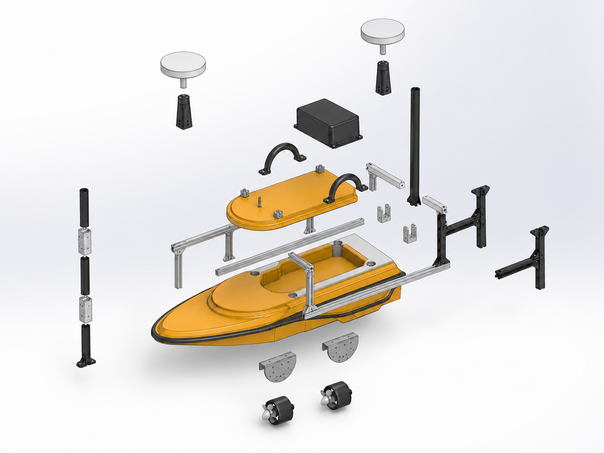
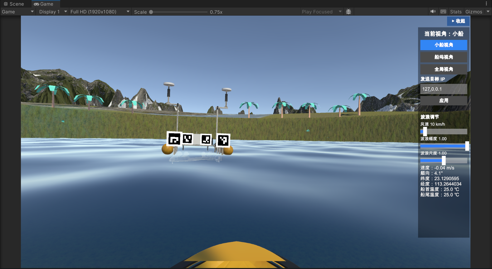
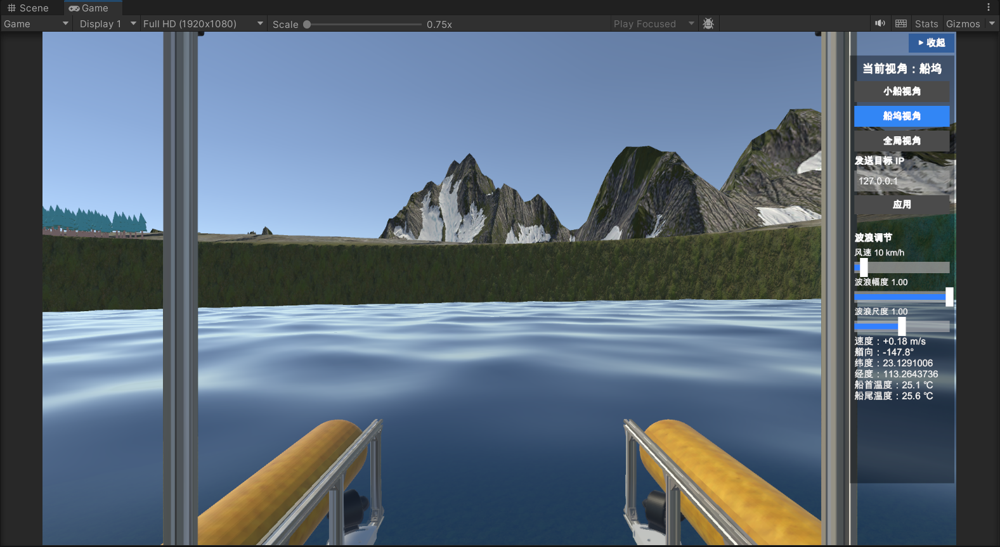
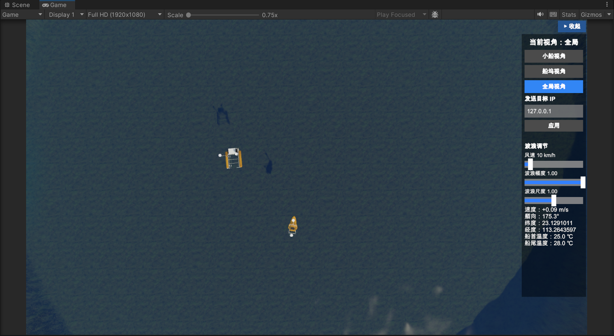
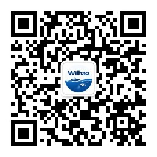

This platform targets algorithm research and validation in USV motion control, path planning & path tracking, and autonomous berthing / docking, and is intended for engineers, researchers and students in the marine-robotics and unmanned-systems industry. As part of the open-source release, we will progressively open the communication protocol, the complete hydrodynamic parameter set, and the real USV that corresponds one-to-one with the digital twin — so that researchers can reproduce experiments, benchmark algorithms, and build on top of the platform.
本平台面向无人船运动控制、路径规划与路径跟踪、 自主靠泊等方向的算法研究与验证，适用于海洋机器人、无人系统行业的 工程师、研究人员与学生。作为开源发布的一部分，我们将开放通信协议、完整的动力学参数， 以及与数字孪生，并且上述内容对应真实 USV，供研究者复现实验、比对算法并进行二次开发。
This project is led by Hao Wen, developed with the NOF Innovation & Entrepreneurship Team, South China University of Technology (Deng Zhijie, Guo Zixuan, Liu Tao, Zhang Ziming, Xia Peiyuan), under the guidance and support of Prof. Qu Yan and Prof. Guo Xiangfeng.
本项目由 文浩 担任总负责人，华南理工大学 NOF 创新创业团队 （邓智杰、郭子轩、刘涛、张梓铭、夏培源）参与开发，并得到华南理工大学 屈衍教授、郭向峰教授 的指导与支持。
Ongoing maintenance, website updates, version iteration, feedback and bug fixes are handled by the NOF team.
后续维护、网页更新、版本迭代、意见反馈与 BUG 处理将由 NOF 团队负责。
The digital twin is engineered to run on ordinary hardware — no discrete GPU required. As a reference, the whole platform is developed and validated on the following modest laptop (the developer's own everyday machine):
数字孪生针对普通硬件做了优化，无需独立显卡即可运行。作为参考，整个平台 正是在下面这台普通笔记本上开发与验证的（开发者自己的日常办公机）：
| 项目Item | 配置Specification |
|---|---|
| CPU | 12th Gen Intel® Core™ i5-12450H |
| RAM | 16 GB |
| GPU | Intel® UHD Graphics （核显）(integrated) |
| OS | Windows 11 Home （64 位）(64-bit) |
If this laptop runs it smoothly, chances are your machine will too.
该数字孪生对配置要求极低，上述笔记本为红米笔记本，2000元人民币。

These figures are faithfully reproduced inside the digital twin: the hydrodynamic parameters are identified by a physics-informed neural network (PINN) fitted on 100+ experimental samples, so the simulated dynamics closely match the physical vessel.
上述各项参数在数字孪生中均被完全拟真：水动力参数由 PINN（物理信息神经网络）基于 100 余次实验采样 拟合辨识得到，使仿真动力学与实船高度一致。
WilhasonOceanMasterV1.0 is a physics-based digital twin and ground-station (GCS) simulation environment for unmanned surface vehicles (USVs), built on the Unity engine. It hosts two fully actuated surface vehicles — a controllable USV-1 and a USV-2 — both driven by high-fidelity marine environment that combines ocean rendering, multi-point buoyancy, a 3-DOF hydrodynamic model, four-thruster thrust allocation, and data-identified parameters.
WilhasonOceanMasterV1.0 是一个面向水面无人艇（USV）的、基于物理的数字孪生与地面站 （GCS）仿真环境，构建于 Unity 引擎之上。场景包含两艘可受控的 无人船-1和无人船-2——二者均由高保真海洋环境驱动， 融合海洋渲染、多浮力点浮力、3 自由度水动力模型、四推进器推力分配与数据辨识参数。
The platform supports three control and data links: a binary UDP link to the ground station (LandStation), a local TCP/JSON link for reinforcement-learning / LQR training (DDPG), and direct manual control via keyboard or steering wheel. It is designed as a testbed for control, perception and cooperation algorithms on marine surface systems.
平台支持三类控制与数据链路：与地面站（LandStation）的二进制 UDP 链路、 面向强化学习 / LQR 训练的本地 TCP/JSON 链路，以及键盘 / 方向盘 直接人工操控。系统定位为海洋水面系统控制、感知与协同算法的验证平台。
The screenshots below show the digital twin interface of WilhasonOceanMasterV1.0 — the 3-DOF USV scene rendered by the Unity engine, with its ground-station and perception views.
以下为 WilhasonOceanMasterV1.0 数字孪生界面——由 Unity 引擎渲染的 3 自由度无人船场景，包含地面站与感知视角。



地面站 LandStation Python 训练端
(二进制 UDP) (TCP)
│ │
▼ ▼
┌────────────────────────────────────────────────────┐
│ Unity 数字孪生引擎 (DDPG USVS) │
│ │
│ 命令解码 → 四推进器合成 (τu, τr) │
│ ↓ │
│ 水动力模型 (3-DOF) + 浮力 + 水流 │
│ ↓ │
│ Rigidbody 刚体推进 (50 Hz) │
│ ↓ │
│ 遥测采集 → UDP 8889 / 8080 上报 │
│ + 视频推流 (TCP JPEG / NDI) │
└────────────────────────────────────────────────────┘
Ground station LandStation Python training
(binary UDP) (TCP)
│ │
▼ ▼
┌────────────────────────────────────────────────────┐
│ Unity digital twin engine (DDPG USVS) │
│ │
│ Command decode → 4-thruster synthesis (τu, τr) │
│ ↓ │
│ Hydrodynamics (3-DOF) + buoyancy + current │
│ ↓ │
│ Rigidbody integration (50 Hz) │
│ ↓ │
│ Telemetry → UDP 8889 / 8080 │
│ + Video streaming (TCP JPEG / NDI) │
└────────────────────────────────────────────────────┘
Commands are decoded into four-thruster efforts, synthesized into a surge force
$\tau_u$ and a yaw moment $\tau_r$, then propagated through the hydrodynamic model
together with buoyancy and current, and finally applied to a Unity
Rigidbody. Telemetry (velocities, heading, position, temperature) is
sampled at 50 Hz and reported upstream, alongside multi-view video streams.
指令被解码为四路推进器出力，合成为前向推力 $\tau_u$ 与偏航力矩 $\tau_r$，随后与水动力模型、
浮力及水流一同作用于 Unity Rigidbody 刚体。遥测（速度、艏向、位置、温度）以
50 Hz 采样并上报，同时输出多视角视频流。
The core dynamics are described by a 3-degree-of-freedom (surge / sway / yaw) manoeuvring model with anisotropic added mass, linear and quadratic damping, and sway–yaw coupling. The identified model for USV-2 reads:
核心动力学采用 3 自由度（纵荡 / 横荡 / 艏摇）操纵性模型，包含各向异性附加质量、 线性与二次阻尼以及横荡–艏摇耦合项。无人船-2 的辨识模型如下：
Here $u, v, r$ are the surge, sway and yaw velocities in the body frame; $m$ is the dry mass, $m_x, m_y$ the surge and sway added masses, and $I_z$ the yaw inertia. The coefficients $X_u, X_{u|u|}, Y_v, Y_{v|v|}, Y_r, N_v, N_r, N_{r|r|}$ are linear/quadratic damping and coupling terms, while $k_n$ and $\tau_{n0}$ describe the thruster gain and offset. All parameters are obtained by system identification from real-vessel data (see below).
其中 $u, v, r$ 分别为船体坐标系下的纵荡、横荡与艏摇速度；$m$ 为干质量，$m_x, m_y$ 为纵/横向 附加质量，$I_z$ 为艏摇惯量。系数 $X_u, X_{u|u|}, Y_v, Y_{v|v|}, Y_r, N_v, N_r, N_{r|r|}$ 为线性/二次阻尼与耦合项，$k_n$ 与 $\tau_{n0}$ 为推进器增益与偏置。全部参数均由实船数据的 系统辨识得到（见下文）。
Multi-point buoyancy. A grid of buoyancy points is distributed along the hull bottom; the wave-surface height at each point is sampled every frame from the ocean (Crest Ocean). An immersed point exerts a restoring force proportional to its immersion depth, applied at the point location so that restoring moments (righting / roll) emerge naturally:
多浮力点浮力。船底按网格均匀布置浮力点，每帧从海面（Crest Ocean）采样 各点处的波面高度。浸没点施加与其浸没深度成正比的恢复力，并作用于浮力点位置，从而自然产生 恢复力矩（扶正 / 横摇）：
where $\zeta_i$ is the sampled wave-surface height, $z_i$ the buoyancy-point height, and $d_{\text{draft}}$ the target draft. The per-point strength $k_b$ is auto-calibrated so that the vehicle settles at the target draft, and the centre of mass is aligned with the centre of buoyancy to guarantee upright stability.
其中 $\zeta_i$ 为采样的波面高度，$z_i$ 为浮力点高度，$d_{\text{draft}}$ 为目标吃水。单点 刚度 $k_b$ 按目标吃水自动标定，使船稳定停在目标吃水深度；并将重心与浮心对齐以保障扶正稳定性。
Ocean rendering & temperature field. The sea surface is rendered with FFT / Gerstner waves (wave spectrum, foam, underwater rendering). A Gaussian surface temperature field is superimposed on the water plane for thermal sensing:
海洋渲染与温度场。海面采用 FFT / Gerstner 波浪（波谱、泡沫、水下渲染）。 水面上叠加解析高斯温度场，用于热场感知：
Bow and stern temperature sensors sample the ground-truth value at their location for telemetry, and ArUco markers provide world-pose ground truth for visual-perception calibration.
船首 / 船尾温度传感器实时采样所在位置水温真值用于遥测；ArUco 视觉标记提供世界位姿真值， 供视觉感知算法标定。
Each vehicle carries four thrusters (two main, two steering). Ground station commands arrive as PWM values (1500 = neutral) and are converted back to force through a quadratic calibration curve, asymmetric between forward and reverse:
每艘载体配备四台推进器（两台主推、两台转向）。地面站指令以 PWM（1500 为中位） 下发，经二次标定曲线反算回力（N），正向与反向不对称：
The two calibration coefficients $a$ and $b$ are identified by a physics-informed neural network (PINN) and exposed as editable fields, so users can re-tune them for their own thrusters.
标定系数 $a$、$b$ 已由物理信息神经网络（PINN）辨识得到，并作为 可编辑字段开放，用户可按自身推进器重新标定。
The four thruster forces are composed at their true positions and orientations into a surge command and a yaw-moment command, the only two channels retained by the 3-DOF model (the lateral components of the symmetric steering pair approximately cancel):
四路推进器在各自真实位置与角度上合成为前向推力指令与偏航力矩指令：
To keep the digital twin faithful to the real vessel, the hydrodynamic and actuator parameters are obtained by system identification and injected into the simulation as configurable fields. The identified 3-DOF parameters of USV-2 (SI units) are:
为使数字孪生贴近实船动态，水动力与执行器参数由系统辨识得到，并以可配置字段 形式注入仿真。无人船-2 的 3 自由度辨识参数（SI 单位）如下：
| 参数Parameter | 符号Symbol | 数值Value | 单位Unit |
|---|---|---|---|
| 干质量Dry mass | $m$ | 35.00 | kg |
| 纵向附加质量Surge added mass | $m_x$ | 52.54 | kg |
| 横向附加质量Sway added mass | $m_y$ | 85.23 | kg |
| 艏摇惯量Yaw inertia | $I_z$ | 23.44 | kg·m² |
| 纵向线性阻尼Surge linear damping | $X_u$ | −26.43 | N·s/m |
| 纵向二次阻尼Surge quadratic damping | $X_{u|u|}$ | −2.93 | N·s²/m² |
| 横向线性阻尼Sway linear damping | $Y_v$ | −0.29 | N·s/m |
| 横向二次阻尼Sway quadratic damping | $Y_{v|v|}$ | −0.92 | N·s²/m² |
| 横荡–艏摇耦合Sway–yaw coupling | $Y_r$ | 2.75 | — |
| 艏摇–横荡耦合Yaw–sway coupling | $N_v$ | 0.60 | — |
| 艏摇线性阻尼Yaw linear damping | $N_r$ | −0.40 | N·m·s |
| 艏摇二次阻尼Yaw quadratic damping | $N_{r|r|}$ | −0.81 | N·m·s² |
| 推进器增益Thruster gain | $k_n$ | 0.37 | — |
| 推进器偏置Thruster offset | $\tau_{n0}$ | −0.04 | N·m |
The digital twin can stream its full state over TCP/IP to the local machine (127.0.0.1) in the open communication-protocol format, so any local program can read the data and run its own processing — logging, visualisation, or a custom controller. A simple data-collection script is bundled as a ready reference, and the communication protocol is open-sourced.
数字孪生可通过 TCP/IP 将完整状态推流到本机（127.0.0.1），内容为开源通信协议 格式，本地程序即可读取数据并做自己的处理——记录、可视化或自定义控制器。我们附带了一个简单的 数据采集脚本作为参考，通信协议本身也已开源。
The digital twin, communication protocol and complete hydrodynamic parameters are open-sourced in a dedicated repository. Versioned release packages (zip / PDF) will be published here shortly.
数字孪生、通信协议与完整动力学参数已在独立仓库开源；带版本号的打包下载（zip / PDF）即将在此发布。
Follow our WeChat official account to get the latest maintenance notes, version updates and previews of upcoming releases.
关注我们的公众号，第一时间获取平台维护内容、版本更新日志与维护预告。
